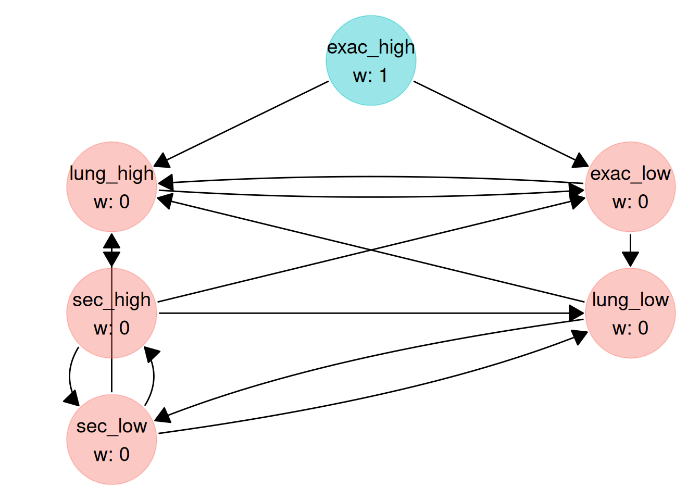
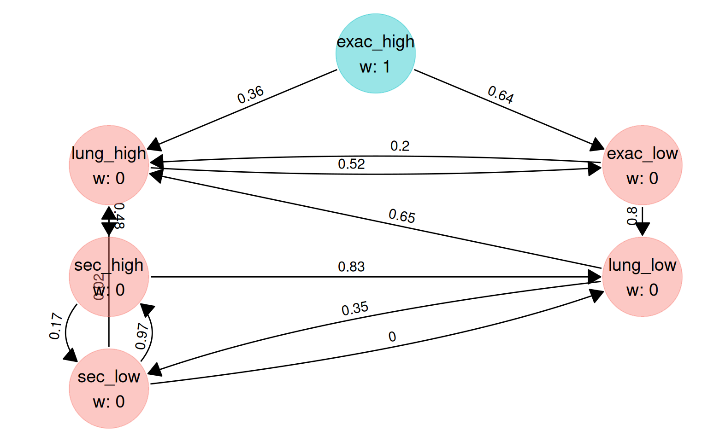

# Each hypothesis compares one dose with one dual therapy on one endpoint
comparison <- c(
"high_vs_A", "high_vs_B", "high_vs_B", "high_vs_A", "high_vs_A", "high_vs_A",
"low_vs_A", "low_vs_B", "low_vs_B", "low_vs_A", "low_vs_A", "low_vs_A"
)
endpoint <- rep(
c("exac", "exac", "fev1_auc", "fev1_trough", "time_exac", "sgrq"),
times = 2
)
# Comparisons that share an arm (equal allocation) have correlation 0.5
corr_comparison <- matrix(
c(
1, 0.5, 0.5, 0,
0.5, 1, 0, 0.5,
0.5, 0, 1, 0.5,
0, 0.5, 0.5, 1
),
nrow = 4,
dimnames = rep(list(c("high_vs_A", "high_vs_B", "low_vs_A", "low_vs_B")), 2)
)
# Endpoints: 0.6 between the two exacerbation endpoints, 0.7 between the two
# lung function endpoints, 0.2 otherwise
endpoints <- c("exac", "time_exac", "fev1_auc", "fev1_trough", "sgrq")
corr_endpoint <- matrix(0.2, 5, 5, dimnames = list(endpoints, endpoints))
diag(corr_endpoint) <- 1
corr_endpoint["exac", "time_exac"] <- 0.6
corr_endpoint["time_exac", "exac"] <- 0.6
corr_endpoint["fev1_auc", "fev1_trough"] <- 0.7
corr_endpoint["fev1_trough", "fev1_auc"] <- 0.7
corr_matrix <- corr_comparison[comparison, comparison] *
corr_endpoint[endpoint, endpoint]
dimnames(corr_matrix) <- NULL
set.seed(2020)
pvals <- simulate_pvalues(
power_nominal = c(
0.85, 0.75, 0.95, 0.80, 0.70, 0.60, # high dose
0.80, 0.70, 0.95, 0.80, 0.65, 0.55 # low dose
),
corr_matrix = corr_matrix,
nsim = 1e5
)Why families?
Multiplicity strategies are often drawn as boxes of hypotheses rather than single hypotheses. Each box, a family, is tested with a multiple test procedure such as Hommel’s or Hochberg’s, and the boxes are connected by a graph. Maurer and Bretz (2014) show how to run such a design as a graphical procedure:
- the hypotheses in a family are tested at the family’s local significance level, with a procedure such as Hommel’s, Hochberg’s or Holm’s;
- a family passes its significance level on along the graph only when every hypothesis in it is rejected.
The procedure strongly controls the family-wise error rate, provided the procedure used within each family controls its own error rate at the family’s level (see Things to know).
graph_optimise() can optimise such a graph. The nodes of the graph are the families, so the weights and the transition matrix it optimises are those between families. You describe the families with family_spec() and pass the result as the families argument.
A two-dose trial
The ETHOS trial (Rabe et al., 2020) compared triple inhaled therapy at two glucocorticoid doses with two dual therapies in COPD. Its testing strategy groups the comparisons into boxes, with the secondary endpoints of each comparison tested with Hochberg’s procedure. We use a simplified version of that strategy with illustrative assumptions, not the trial’s.
Two doses of triple therapy (high and low) are each compared with two dual therapies, A and B. For each dose there are three families:
| Family | High dose | Low dose | Within-family test |
|---|---|---|---|
| Exacerbations: rate vs A, rate vs B | H1, H2 | H7, H8 | Hommel |
| Lung function: FEV1 AUC vs B, trough FEV1 vs A | H3, H4 | H9, H10 | Hommel |
| Secondary: time to first exacerbation vs A, SGRQ vs A | H5, H6 | H11, H12 | Hochberg |
As in ETHOS, all of starts on the high-dose exacerbation family, which passes it on to the low-dose exacerbation family and to the high-dose lung function family.
P-values
pvals has one column per hypothesis, as usual. Comparisons that share an arm have correlated test statistics (0.5 with equal allocation), and so do related endpoints.
Families
family_spec() lists the hypotheses (columns of pvals) in each family and the test used within each family. The names become the names of the graph’s nodes.
fams <- family_spec(
list(
exac_high = 1:2,
lung_high = 3:4,
sec_high = 5:6,
exac_low = 7:8,
lung_low = 9:10,
sec_low = 11:12
),
test = c("hommel", "hommel", "hochberg", "hommel", "hommel", "hochberg")
)
fams
#> <multigrain_family_spec>
#> Hypotheses (columns of the p-value matrix) in each family:
#> exac_high (hommel): 1 2
#> lung_high (hommel): 3 4
#> sec_high (hochberg): 5 6
#> exac_low (hommel): 7 8
#> lung_low (hommel): 9 10
#> sec_low (hochberg): 11 12Trial success
The trial success measure is written in terms of the individual hypotheses, exactly as without families: r1 is the rejection of H1, and so on. The success of a whole family is a conjunction, for example r1 && r2. Here, rejecting both exacerbation comparisons is worth 4 for the high dose and 2 for the low dose, each lung function comparison is worth 1 and each secondary comparison 0.5.
gain <- trial_success(
4 * (r1 && r2) + 2 * (r7 && r8) +
r3 + r4 + r9 + r10 +
0.5 * (r5 + r6 + r11 + r12)
)
#> ✔ Trial success function compiled and sourced successfully.The hierarchy as drawn
A graph with families has one node per family, so its weights and transition matrix are and . The hierarchy below splits the high-dose exacerbation family’s equally between its two successors, and lets each secondary family pass its to the other dose’s secondary family.
fam_names <- names(fams$members)
hyp_weight_drawn <- c(1, 0, 0, 0, 0, 0)
trans_matrix_drawn <- matrix(
c(
0, 0.5, 0, 0.5, 0, 0, # exac_high -> lung_high, exac_low
0, 0, 1, 0, 0, 0, # lung_high -> sec_high
0, 0, 0, 0, 0, 1, # sec_high -> sec_low
0, 0, 0, 0, 1, 0, # exac_low -> lung_low
0, 0, 0, 0, 0, 1, # lung_low -> sec_low
0, 0, 1, 0, 0, 0 # sec_low -> sec_high
),
nrow = 6,
byrow = TRUE,
dimnames = list(fam_names, fam_names)
)
power_drawn <- calc_power_pvals(
pvals,
hyp_weight = hyp_weight_drawn,
trans_matrix = trans_matrix_drawn,
custom_power = list(gain = gain),
families = fams
)
power_drawn$family_power
#> exac_high lung_high sec_high exac_low lung_low sec_low
#> 0.68068 0.47893 0.22224 0.39630 0.28505 0.16020
power_drawn$gain
#> [1] 5.82886With families, calc_power_pvals() also returns family_power: the probability that every hypothesis in a family is rejected, which is when the family passes its on. local_power still has one entry per hypothesis.
Optimising the family graph
The graph constraint has one node per family. We keep all initial weight on the high-dose exacerbation family and allow a few edges beyond the drawn ones (NA marks an edge to optimise). Nothing points back to the high-dose exacerbation family: it holds all of at the start, so it is always the first family to be emptied.
fam_constraint <- graph_constraint(
hyp_constraint = c(1, 0, 0, 0, 0, 0),
trans_constraint = matrix(
c(
0, NA, 0, NA, 0, 0, # exac_high -> lung_high, exac_low
0, 0, NA, NA, 0, 0, # lung_high -> sec_high, exac_low
0, 0, 0, NA, NA, NA, # sec_high -> low-dose families
0, NA, 0, 0, NA, 0, # exac_low -> lung_high, lung_low
0, NA, 0, 0, 0, NA, # lung_low -> lung_high, sec_low
0, NA, NA, 0, NA, 0 # sec_low -> lung_high, sec_high, lung_low
),
nrow = 6,
byrow = TRUE
),
names = fam_names
)
plot(fam_constraint)
The call to graph_optimise() is the usual one, plus families. pvals and gain refer to the 12 hypotheses; fam_constraint refers to the 6 families.
set.seed(1)
graph_fam <- graph_optimise(
pvals = pvals,
graph_constraint = fam_constraint,
trial_success = gain,
families = fams,
num_threads = 4
)
graph_fam
#> <multigrain_graph_optimal>
#> Optimal graph found (given user-defined constraints on graph and computational resources):
#>
#> Hypothesis weights:
#> exac_high lung_high sec_high exac_low lung_low sec_low
#> 1 0 0 0 0 0
#>
#> Transition matrix:
#> exac_high lung_high sec_high exac_low lung_low sec_low
#> exac_high 0 0.3627 0.0000 0.6373 0.0000 0.0000
#> lung_high 0 0.0000 0.4845 0.5155 0.0000 0.0000
#> sec_high 0 0.0000 0.0000 0.0000 0.8333 0.1667
#> exac_low 0 0.1956 0.0000 0.0000 0.8044 0.0000
#> lung_low 0 0.6494 0.0000 0.0000 0.0000 0.3506
#> sec_low 0 0.0234 0.9732 0.0000 0.0034 0.0000
#>
#> Families of hypotheses (one per node):
#> exac_high (hommel): 1 2
#> lung_high (hommel): 3 4
#> sec_high (hochberg): 5 6
#> exac_low (hommel): 7 8
#> lung_low (hommel): 9 10
#> sec_low (hochberg): 11 12
#>
#> Trial success function:
#> 4 * (r1 && r2) + 2 * (r7 && r8) + r3 + r4 + r9 + r10 + 0.5 * (r5 + r6 + r11 + r12)
#>
#> Value of trial success measure:
#> 6.0397
plot(graph_fam)
Comparing the two graphs
The optimised graph was chosen on pvals, so its gain on those p-values is optimistic. We compare both graphs on an independent sample.
set.seed(2021)
pvals_new <- simulate_pvalues(
power_nominal = c(
0.85, 0.75, 0.95, 0.80, 0.70, 0.60,
0.80, 0.70, 0.95, 0.80, 0.65, 0.55
),
corr_matrix = corr_matrix,
nsim = 1e5
)
compare_graphs <- function(hyp_weight, trans_matrix) {
power <- calc_power_pvals(
pvals_new,
hyp_weight = hyp_weight,
trans_matrix = trans_matrix,
custom_power = list(gain = gain),
families = fams
)
c(gain = power$gain, power$family_power)
}
rbind(
drawn = compare_graphs(hyp_weight_drawn, trans_matrix_drawn),
optimised = compare_graphs(graph_fam$hyp_weight, graph_fam$trans_matrix)
) |>
knitr::kable(digits = 3)| gain | exac_high | lung_high | sec_high | exac_low | lung_low | sec_low | |
|---|---|---|---|---|---|---|---|
| drawn | 5.874 | 0.683 | 0.482 | 0.224 | 0.401 | 0.290 | 0.164 |
| optimised | 6.077 | 0.683 | 0.488 | 0.198 | 0.451 | 0.362 | 0.139 |
The columns after gain are the probabilities that each family is emptied, i.e. passes its on.
Things to know
-
Dependence within families. Hommel’s and Hochberg’s procedures control the error rate when the test statistics within a family are positively dependent, for example one-sided tests based on multivariate normal statistics with non-negative correlations, as here. This cannot be checked from
pvals. Usetest = "holm"for a family where negative dependence is possible. -
All or nothing. A family passes its on only when all of its hypotheses are rejected, so its least powerful hypothesis decides. A large family with one weak hypothesis rarely passes anything on; splitting it into smaller families is a design option that
graph_optimise()can evaluate. -
Two kinds of index.
pvals,trial_success()andlocal_powerrefer to the individual hypotheses.graph_constraint(),start_graph, the optimised weights and transition matrix, andfamily_powerrefer to the families. - What is optimised. Families are combined with a weighted Bonferroni test, and only the weights and transitions between families are optimised. The tests within families are fixed.
References
Hochberg, Y. (1988). A sharper Bonferroni procedure for multiple tests of significance. Biometrika, 75(4), 800–802.
Hommel, G. (1988). A stagewise rejective multiple test procedure based on a modified Bonferroni test. Biometrika, 75(2), 383–386.
Maurer, W. and Bretz, F. (2014). A note on testing families of hypotheses using graphical procedures. Statistics in Medicine, 33(30), 5340–5346.
Rabe, K. F., Martinez, F. J., Ferguson, G. T., et al. (2020). Triple inhaled therapy at two glucocorticoid doses in moderate-to-very-severe COPD. New England Journal of Medicine, 383(1), 35–48. https://doi.org/10.1056/NEJMoa1916046